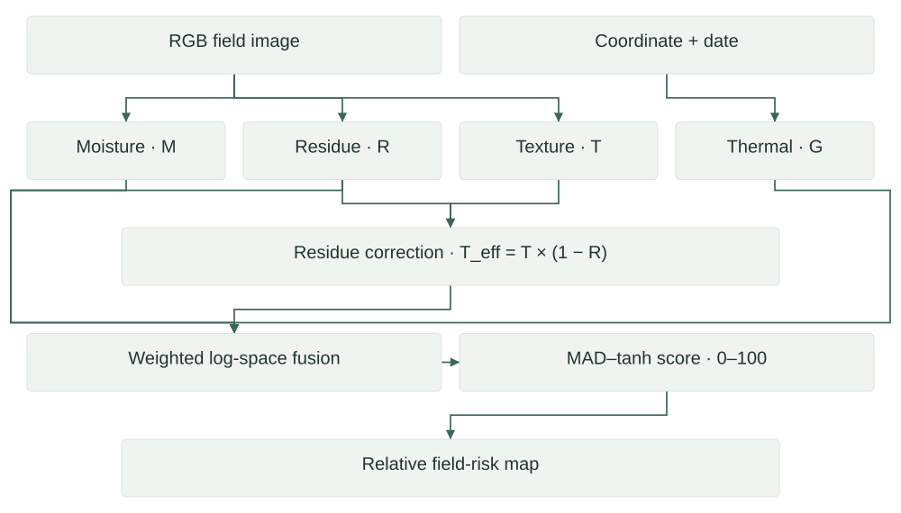
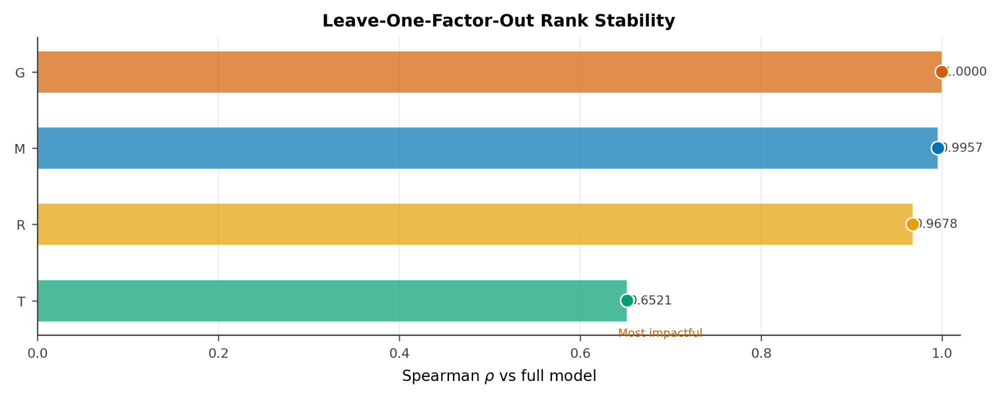
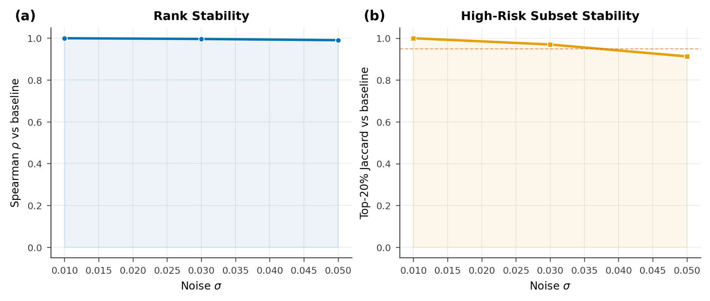

Research · Research prototype
WERM
Weed Emergence Risk Mapping
A framework that combines field imagery and thermal accumulation to rank relative weed-emergence risk before visible emergence.
Architecture
Estimate where scouting attention may be most useful within a field, while testing the assumptions behind the risk ranking.

Fusion mathematics
M: moisture proxy; G: normalized thermal accumulation; R: residue fraction; U: uncovered fraction; T: normalized texture. Inputs to logarithms are floored by ε.
U = 1 − R
Teff = T · Uα
L = 0.30 ln(max(M, ε)) + 0.20 ln(max(G, ε))
+ 0.20 ln(max(U, ε)) + 0.30 ln(max(Teff, ε))
x = (L − median(L)) / MAD(L)
Sengine = 50 · (1 + tanh(x))
Sintegrated ≈ 50 · (1 + tanh(x / (2 · 1.4826)))
These are batch-relative index mappings. The technical PDF explains differing near-zero-spread handling, residue damping and why the bounded score is not a probability.
Technical structure
| Component | Implementation | Role |
|---|---|---|
| Moisture | ResNet-18 regression | Image-derived wetness proxy |
| Residue | ResNet-18 + sigmoid | Fractional surface cover |
| Texture | 32-level GLCM contrast | Surface-disturbance proxy |
| Thermal | 7-day growing degree days | NASA POWER temperature input |
| Fusion | Weights 0.30 / 0.20 / 0.20 / 0.30 | Relative score and A–E bins |
Residue damping changes the effective uncovered-residue exponent to 0.50 at α = 1. The presentation clarifies that 94.5% refers to a share of summed component variances, not an independent causal attribution of total variance.
Selected evidence





Evidence & scope
| Area | Evidence | Reference |
|---|---|---|
| Primary image study | 333 images from two wheat fields | Manuscript Section III.B |
| Ablation | Removing texture: rank correlation 0.652 | Manuscript Table 3 |
| Input perturbation | 5% noise: rank correlation 0.990 | Manuscript Table 3 |
| Weight uncertainty | 42 images with high-risk inclusion ≥ 0.90 across 500 sampled weights | Presentation slide 15 |
| Spatial check | Fused-risk Moran’s I: p = 0.777; not significant | Manuscript Table 5 |